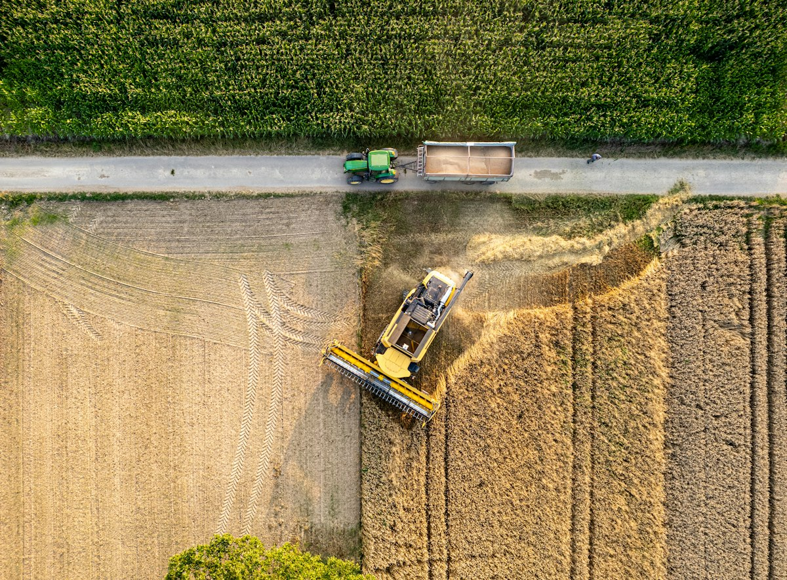

AGRICULTURE × INTELLIGENCE
Predict smarter.
Grow better.
Estimate crop yield using crop and weather data. Explore a clearer picture of your growing season with this academic AIML project.

—
Awaiting prediction
Weather Data
Live-ready inputs
Crop Insights
Seasonal patterns
AI Model
ML-powered estimate
YIELD ESTIMATOR
Plan with a little more clarity.
Enter growing conditions to see an illustrative yield estimate.
Prediction Complete
Rice • Kharif
Estimated Yield
4.80 t/ha
Tonnes per hectare
Total Production
12.00 tonnes
Across 2.5 hectares
SEASONAL PERSPECTIVE
Yield trends by season
Illustrative data
Historical yield · tonnes per hectare
Best outlook: Kharif season
An illustrative seasonal comparison, not a forecast.
About AgriPredict AI
AgriPredict AI is an academic Artificial Intelligence and Machine Learning (AIML) mini project demonstrating yield estimation through agronomic parameters including state, crop variety, seasonal factors, rainfall, and temperature.